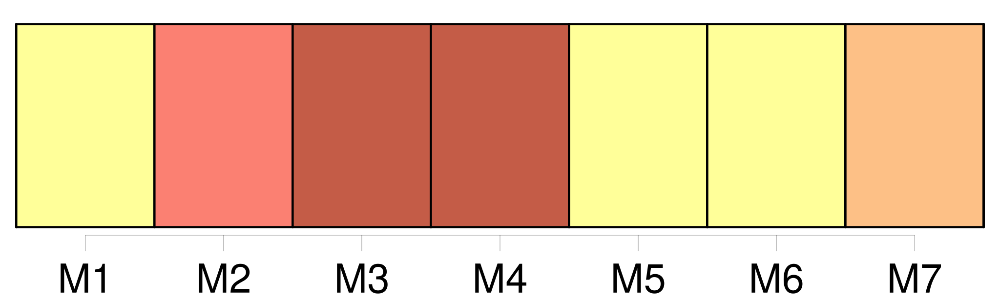
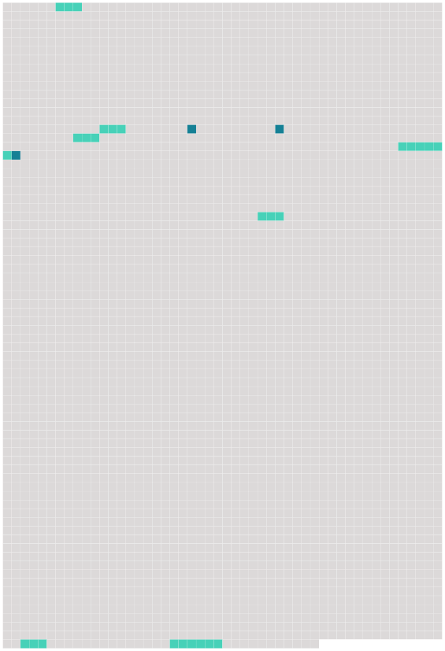

Longueur nb maillons : 10 mentions |
 |
Le président de l'Institut, [le secrétaire général] et un représentant des Communautés européennes participent sans droit de vote aux séances du conseil supérieur. [27 phrases]
[Un secrétaire général] assite le président de l'Institut dans [ses] tâches d'organisation et d'administration. [1 phrases]
[Son] mandat et la durée de celui -ci sont fixés par les dispositions réglementaires visées à l'article 6 paragraphe 5 sous a ). [1 phrases]
[Le secrétaire général] et le président de l'Institut ne peuvent être de la même nationalité, sauf décision contraire prise à l'unanimité par le conseil supérieur. [4 phrases]
Sont membres du conseil académique : [9 phrases] Un bureau du conseil académique, présidé par le président de l'Institut, assisté [du secrétaire général] et composé du président et des chefs de départements, exerce les tâches particulières qui lui sont confiées par le conseil académique. [121 phrases]
Le Conseil académique peut valablement délibérer dès qu'il est composé du président, [du secrétaire général] et de ces huit enseignants.
Article 31 |
 |
Il est possible de télécharger la ressource sur la page Ortolang |
Si vous avez des questions ou vous voyez des erreurs, merci d'envoyer un mail à silvia.federzoni89@gmail.com |